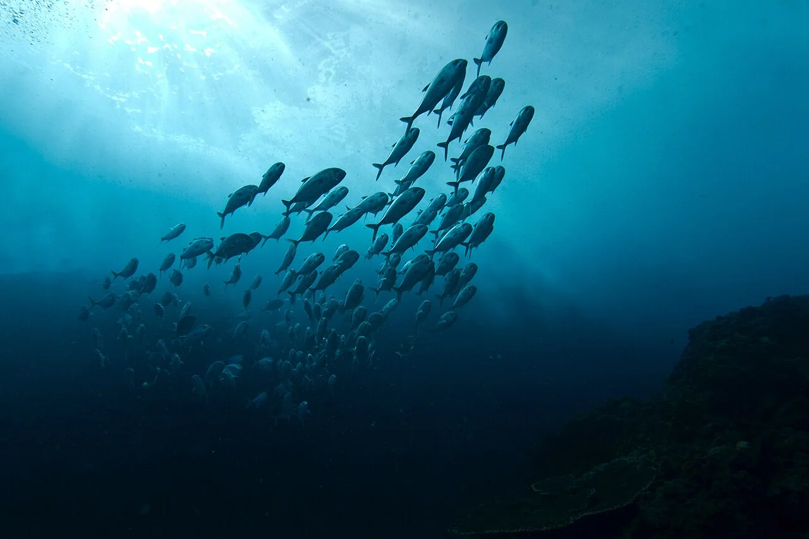

Julian Rocks (Nguthungulli) — Byron Bay
Byron Bay, Nouvelle-Galles du Sud, Australie · snorkeling, plongée

Deux petits îlots rocheux à 2,5 km de Byron Bay, dans la réserve de Nguthungulli et le parc marin du cap Byron. On les rejoint par une courte traversée en bateau. Selon Visit NSW, c’est le point le plus au sud pour de nombreuses espèces d’eau chaude : tortues caouannes, requins-léopards, raies manta. Les requins gris nourrice, d’eau plus fraîche, y passent aussi. Selon Visit NSW, la fin de l’été donne l’eau la plus chaude et la meilleure visibilité ; à Byron Bay, la mer est à 25,9 °C en moyenne en janvier (seatemperature.info).
- Lieu
- Byron Bay, Nouvelle-Galles du Sud, Australie
- Niveau
- Variable selon les conditions
- Activités
- snorkeling, plongée
- Type d'eau
- Mer / océan
- Coordonnées
- -28.61, 153.63 (position approximative du secteur)
Dangers à connaître
- Accès en bateau : les rochers sont à 2,5 km de la côte.
- Collecter ou détruire des animaux est interdit, et la pêche sous-marine aussi. Toute pêche est bannie à moins de 500 m des rochers.
- Habitat important du requin gris nourrice : garde tes distances avec la faune.
- Les rochers ont une grande importance pour le peuple Arakwal : les aînés demandent qu’ils soient protégés de tout mauvais usage.
Le conseil d'Ocean Buddy
Les requins-léopards se voient surtout de décembre à mai aux Needles, selon byronbay.com. Renseigne-toi auprès d’un opérateur de Byron Bay pour la traversée, et ne touche ni ne prélève rien : la réserve est protégée.
Ouvrir dans Ocean Buddy Télécharger sur l'App Store
Source : Fiche Ocean Buddy · décembre 2026 · d’après Wikipédia (réserve Nguthungulli Julian Rocks), Visit NSW, byronbay.com, NSW Government et seatemperature.info · à vérifier localement.